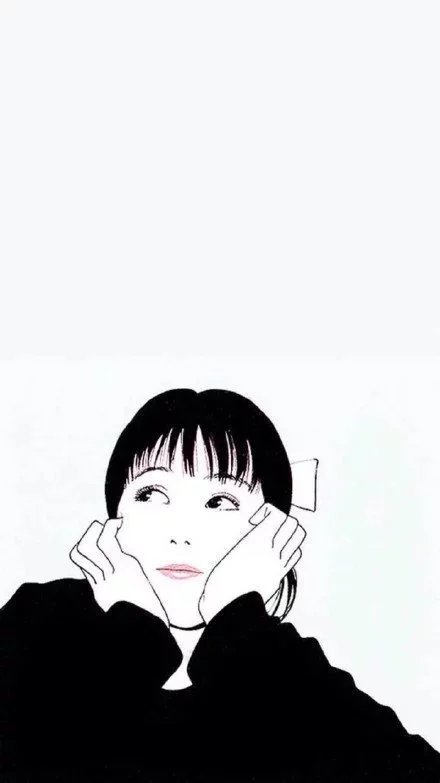

- 一个人的世界 ，很安静 ，安静的可以听到自己的呼吸声和心跳声 。
- 冷了 ，给自己加件外套 ；
- 饿了 ，给自己买个面包 ；
- 病了 ，给自己一份坚强 ；
- 失败了 ，给自己一个目标 ；
- 跌倒了 ，在伤痛中爬起并给自己一个宽容的微笑
- 是啊 ，我总是一个人 ，你从来不曾来过 ，
- 我也从来不曾出现在你的世界
- 似乎习惯了等待， 单纯的以为等待就会到来。
- 但却在等待中错过了， 那些可以幸福的幸福。
- 在失去时后悔， 为什么没有抓住。 其实等待本身就是一种可笑的错误。
- 明知道等待着一份不知能否到来的幸福···
